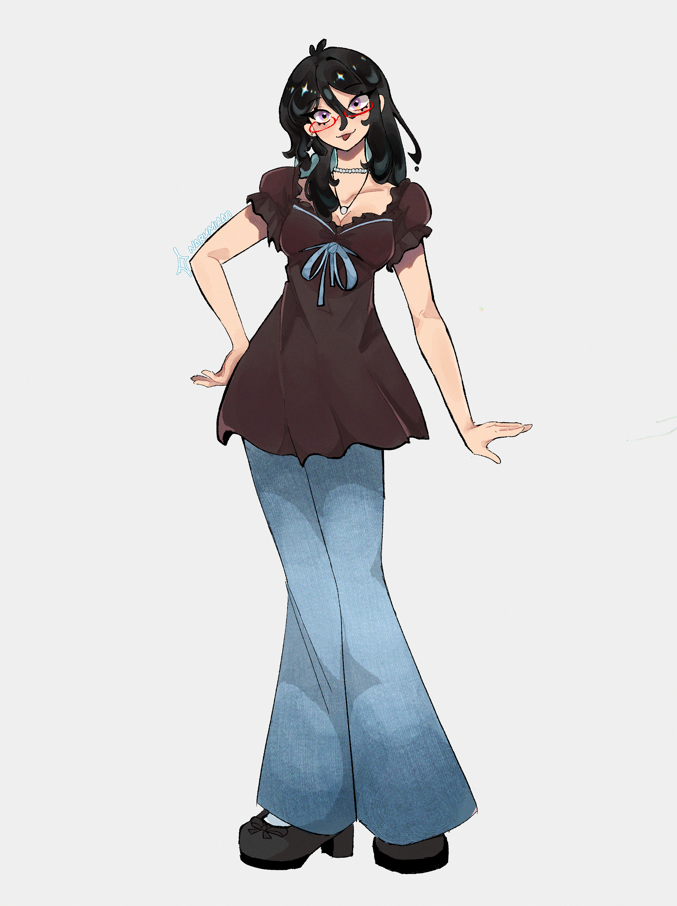
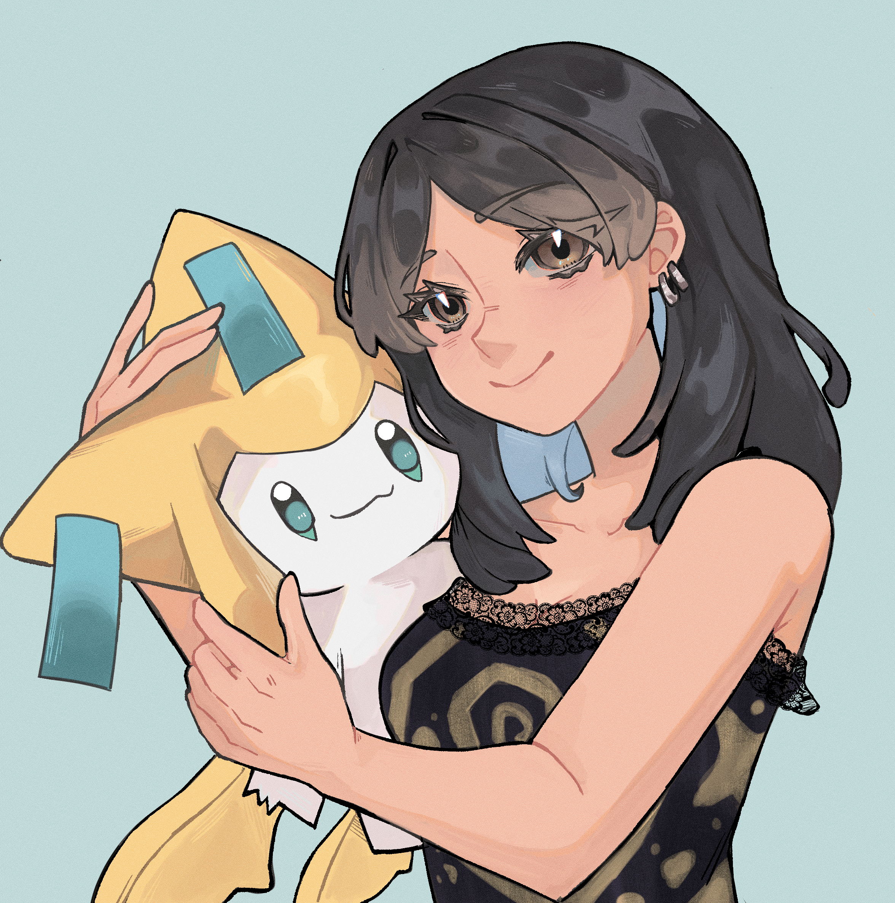
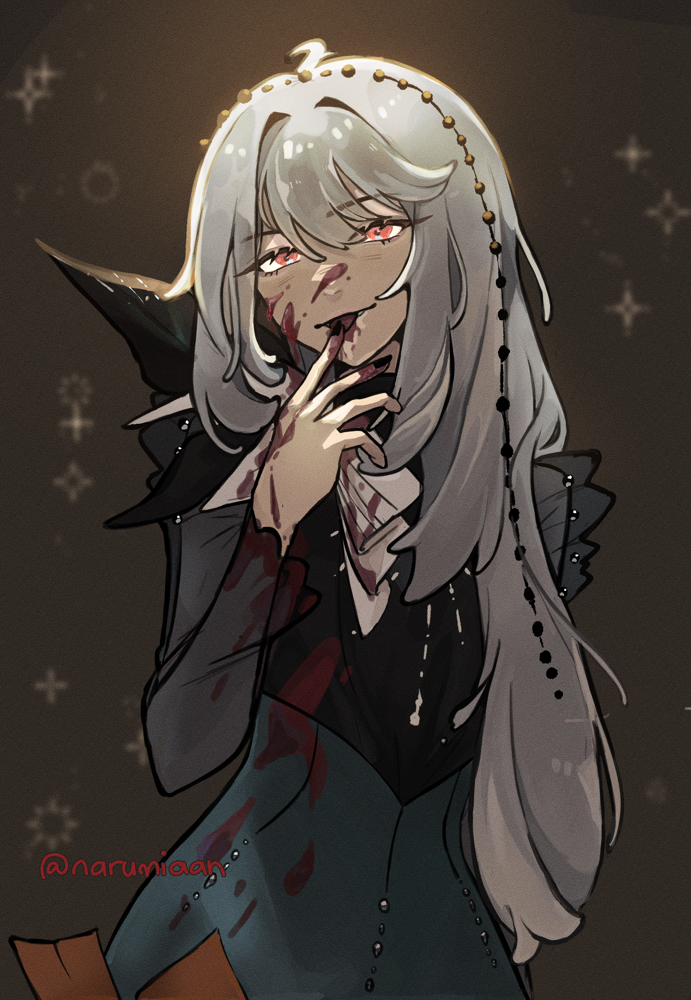

Welcome to my projects showcase! Here you'll see 3 of my proudest works in 2026! I hope to do more art soon, but I am proud of myself for having at least the time to do what I'm passionate about.

This is a type of personal work! This is called a Persona. It's essentially a self-portrait or how you view yourself with your own Unique Style!

This is for a USA based client! She commissioned me to draw her and her favorite pokemon named Jirachi! Had so much fun drawing the pokemon and one of the most rewarding work i've done so far in the year.

This character is named 'Semmelweiss' from a game called Reverse 1999. She's my favorite character in the game! I tried getting out of my comfort zone to explore how to draw lighting and how to essentially have a more paintery style. Even though this was a study, I am still incredibly proud of how much I did good.